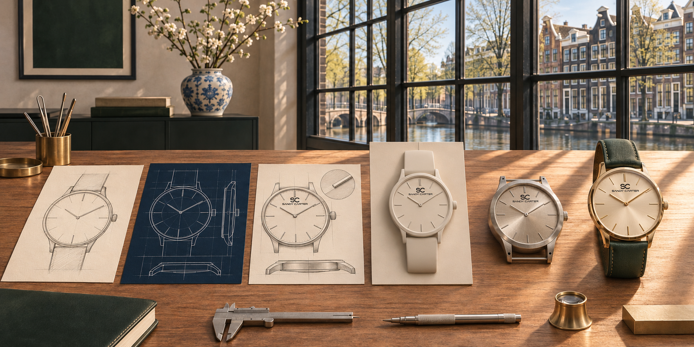

Minimalism is a discipline
A minimalist watch is not simply a watch with fewer elements. It is the result of deliberate decisions: which marker belongs on the dial, how typography supports legibility and how case, crown and strap relate as one form.
SANDY D CARTER approaches minimalist luxury watches through Scandinavian-inspired restraint. The aim is to create contemporary luxury watches that feel considered from a distance and reward attention up close.
Versatility by design
Clean visual architecture allows a watch to move naturally between professional, occasion and casual settings. This makes minimalist watches a practical choice for people who want one strong point of view rather than a design tied to a single trend.

Frequently asked questions
Are minimalist watches plain?
No. Strong minimalist design uses proportion, typography, finishing and purposeful detail to create character without clutter.
Are minimalist watches versatile?
Their visual clarity often makes them adaptable across work, occasion and casual wardrobes.